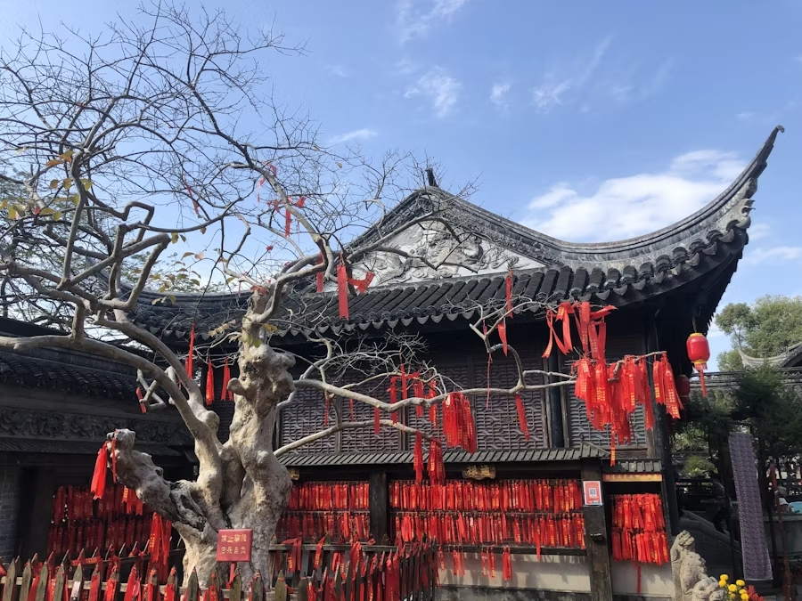
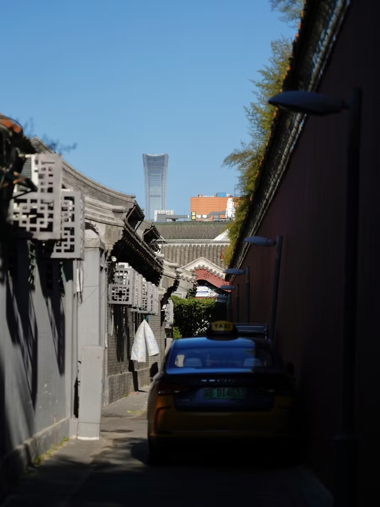

Design Elements and Materials in China
Chinese buildings often feature sloped, tiled roofs with dramatic eaves, supported by wooden frameworks using post-and-lintel techniques. Materials like timber, stone, and glazed ceramic tiles allowed builders to express elegance while remaining earthquake-resilient.
Common decorative elements include dragon motifs, red and gold color schemes symbolizing prosperity, and wooden lattice windows. Pagodas, courtyard homes, and garden designs showcase a profound respect for order, nature, and cultural symbolism.

